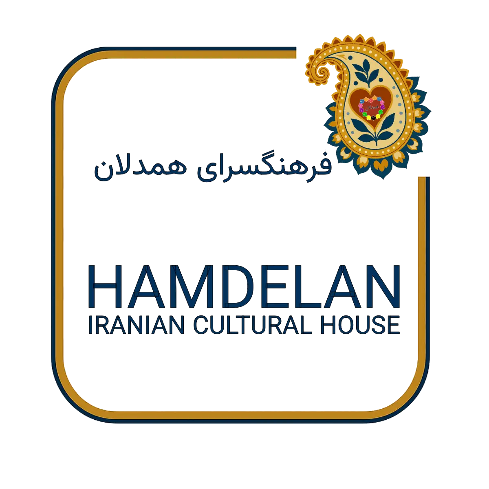

A home for Iranian culture and art in Western Australia
خانهای برای فرهنگ و هنر ایران
Vision: a warm, inclusive Perth community where Iranian heritage is celebrated, preserved and shared with everyone.
Hamdelan (همدلان, “those of one heart”) is a non-profit run by volunteers. We host poetry, music, dance, storytelling, food and family events, free and open to all.
About HICH Get involved
Persian Arts and Culture Night
Fridays, 6:00–8:30pm, 1-3 Hill View Pl, Bentley. Free, everyone welcome. Bring a plate to share.
See events